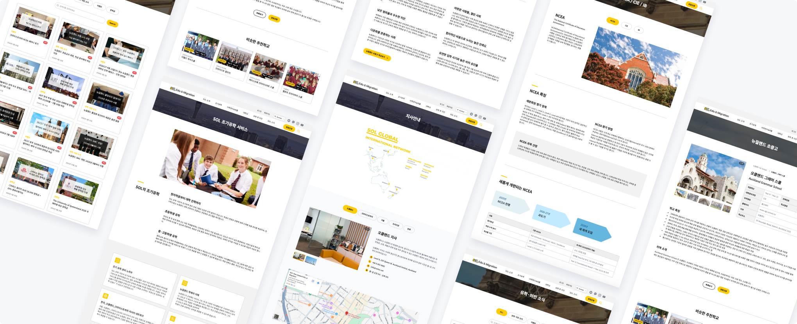

Modular & Block-Based Website Redesign
Proposed and led a shift from page-by-page rebuilding to a modular, block-based system for an education and migration agency's WordPress site. By defining reusable components and assembling around 80% of pages independently, the internal team gained the ability to manage content without ongoing developer support.
The new system cut development costs by 40% and is now being extended to Chinese and Thai markets.
